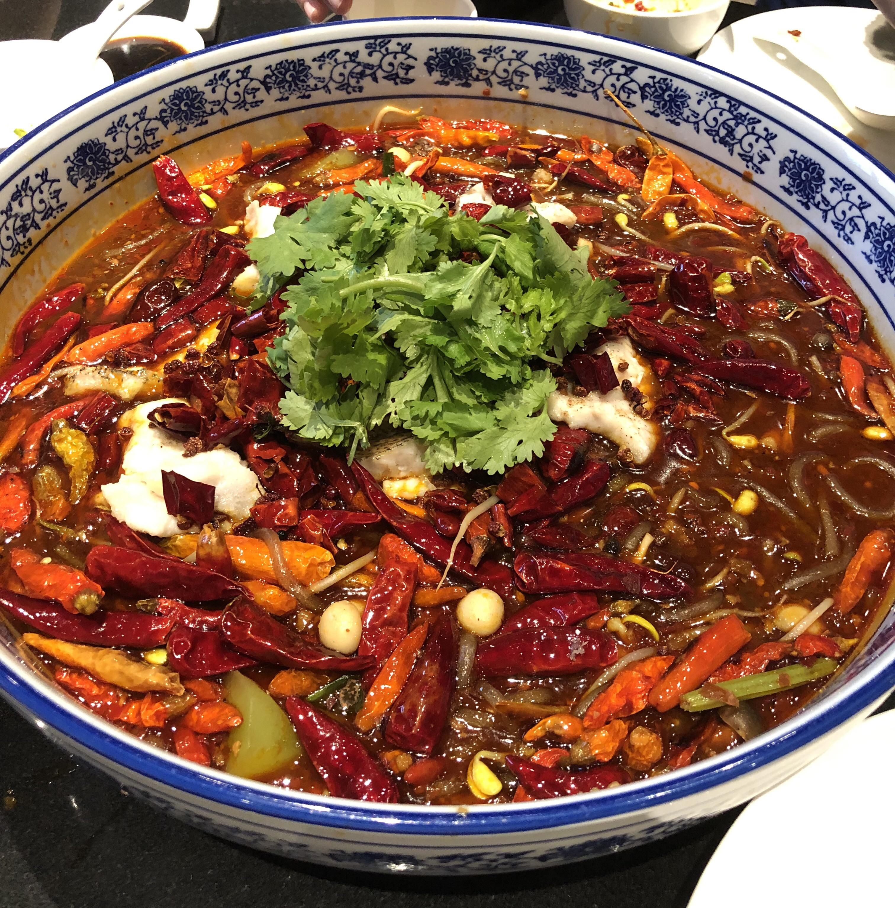

Home
Boiled Fish

Description
Boiling is a healthy and quick way to prepare fish, preserving its natural flavor and delicate texture.
This recipe features fresh fish fillets poached to perfection with simple aromatics.
Ingredients
- 500g fresh fish fillets (such as cod, tilapia, or snapper)
- 2 slices of fresh ginger
- 1 stalk of green onion, cut into sections
- 1 teaspoon of salt
- Water (enough to submerge the fish)
- A dash of light soy sauce and sesame oil for garnish
Steps
- Fill a large pan or pot with enough water to cover the fish and bring it to a boil.
- Add ginger slices, green onions, and salt to the boiling water.
- Gently place the fish fillets into the water.
- Lower the heat to a simmer and cook for about 5-8 minutes until the fish is opaque and flakes easily.
- Carefully remove the fish from the water and place it on a serving plate.
- Drizzle with soy sauce and sesame oil if desired before serving.